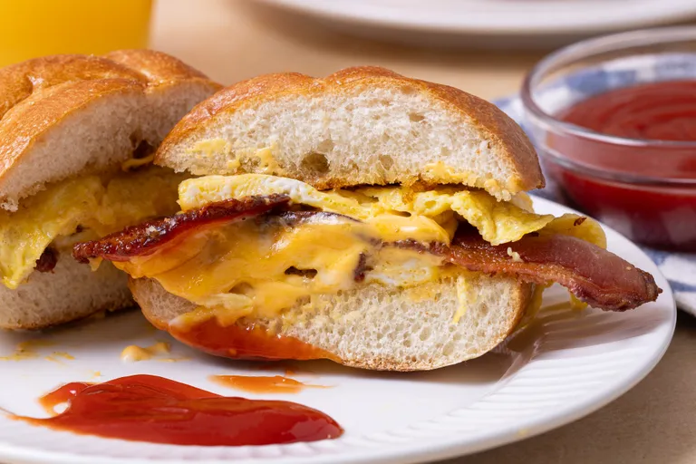

Bacon Egg and Cheese
Home
NYC Deli Bacon Egg & Cheese

Ingredients
- 4 strips bacon
- 2 Kaiser rolls, sliced in half horizontally
- 4 tablespoons unsalted butter, divided
- 4 large eggs, lightly whisked
- 4 slices American cheese
- ketchup, for serving (optional)
Directions
Gather all ingredients.
Ingredients for a bacon egg and cheese sandwich with buns sliced cheese scrambled eggs bacon butter and ketchup
Place bacon in a large skillet and cook over medium-high heat, turning occasionally, until crisp, about 10 minutes. Drain bacon slices on paper towels.
Four strips of bacon frying in a pan on a stove top
Melt 2 tablespoons butter in a large nonstick pan or griddle over low heat. Add Kaiser rolls, cut sides down, and toast until lightly golden, about 3 minutes. Remove and set aside.
Four bread buns being toasted in a frying pan
For each sandwich, melt 1 tablespoon butter in the skillet. Pour half the eggs into the pan, and cook as if making an omelet, pushing eggs aside and lifting to allow uncooked egg to run underneath. Layer 1 slice of cheese, 2 slices bacon, and 1 slice cheese onto half of the cooked egg, and fold the other half over the top. Add this to a toasted Kaiser roll, and wrap the roll in foil to steam. Repeat with remaining sandwich ingredients.
Cooking ingredients for a bacon egg and cheese sandwich in a frying pan
Slice in half and serve with ketchup.
Bacon egg and cheese sandwich on a wooden board with a knife and parchment paper
Enjoy!
Bacon egg and cheese sandwich on a plate with ketchup
Home